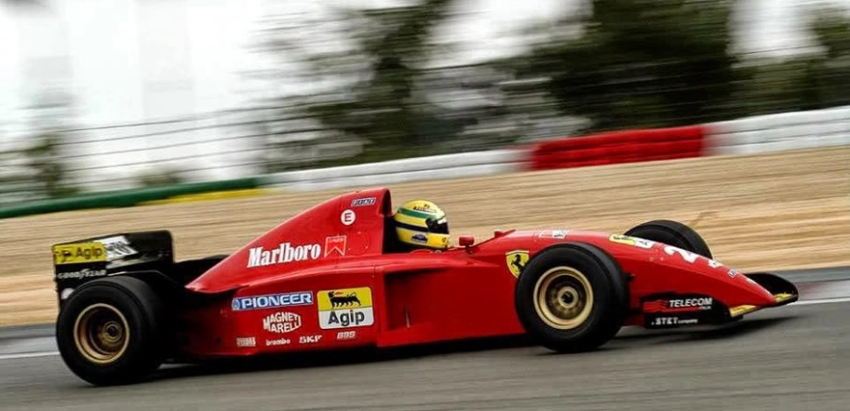

Historia de Ferrari en las Carreras
Ferrari ha sido un nombre sinónimo de carreras y velocidad desde su fundación en 1939 por Enzo Ferrari. Desde los primeros años, Ferrari se involucró en competiciones automovilísticas y se ha convertido en una de las marcas más icónicas en la historia de las carreras.
Desde su primera victoria en el Gran Premio de Roma en 1947, Ferrari ha estado en la cima de los deportes de motor, acumulando numerosos campeonatos y logros en Fórmula 1, Le Mans y otras disciplinas.

La pasión por la innovación y el rendimiento ha impulsado a Ferrari a desarrollar algunos de los autos de carreras más legendarios, como el Ferrari 250 GTO y el F2004, que dominó en la Fórmula 1. La marca también ha forjado asociaciones duraderas con pilotos legendarios como Michael Schumacher y Niki Lauda.
Hoy en día, Ferrari continúa su legado en las pistas y sigue siendo una fuerza dominante en el mundo del automovilismo, manteniendo su reputación por la excelencia y la pasión por la velocidad.